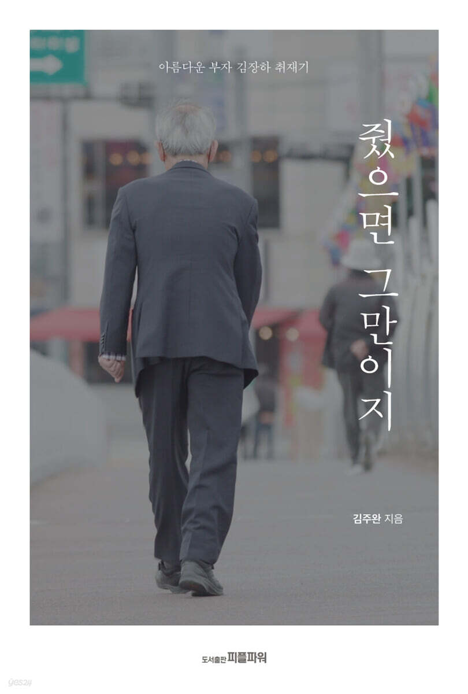

359쪽 152X223mm (A5신) 503g ISBN : 9791186351543
아름다운 부자 김장하를 취재한 기록이다. 책을 보면 김장하는 보통 사람들은 따라 하기 어려운 대단한 인물이라는 생각이 절로 든다. 찢어지게 가난한 집안에서 태어나 중학교밖에 졸업하지 못하고 한약사로 성공해 대단한 부를 일군 것을 두고 하는 말이 아니다.
선생은 나눔과 베풂을 일상 속에서 실천했다. 20대 젊은 시절부터 가난한 학생들을 위해 남몰래 장학금을 주었다. 지금까지 선생의 장학금을 받은 사람이 1000명을 웃돈다고 한다. 100억 원이 넘는 돈을 들여 세운 사학 명신고등학교는 자리를 잡자마자 바로 국가에 헌납했고 필생의 사업이었던 한약방을 접을 때도 30억 원이 넘는 자산을 국립경상대에 기부했다. 선생의 지원은 교육뿐 아니라 사회·문화·역사·예술·여성·노동·인권 등 정치를 제외한 모든 영역에 걸쳐 있었다.
『줬으면 그만이지』는 ‘아름다운 부자 김장하 취재기’이기도 하지만 ‘허락받지 못한 취재기’이기도 하다. 김장하 선생은 본인의 정의로운 베풂을 여태 꽁꽁 숨겨왔다. 보통 사람이라면 열 배 백 배 뻥튀기해 알리고도 남았을 텐데 선생은 그랬다. 이런 선생이 본인에 대한 취재를 허락했을 리가 만무했고 실제로도 그러했다.
김주완 (지은이)
『줬으면 그만이지』는 ‘아름다운 부자 김장하 취재기’이기도 하지만 ‘허락받지 못한 취재기’이기도 하다. 김장하 선생은 본인의 정의로운 베풂을 여태 꽁꽁 숨겨왔다. 보통 사람이라면 열 배 백 배 뻥튀기해 알리고도 남았을 텐데 선생은 그랬다. 이런 선생이 본인에 대한 취재를 허락했을 리가 만무했고 실제로도 그러했다.
김주완(지은이)의 말
“이만큼 베푼 사람은 많지만 이만큼 드러내지 않은 이는 없다”
20대 중반부터 50년 넘게 이어온 기대 없이 베풀고 대가 바라지 않는 삶
선한 영향력 절로 넓혀가는 김장하 바이러스
도대체 무엇이 이런 삶을 가능하게 했을까
한동안 소문으로만 떠돌던 나눔과 베풂 이야기
가난 속에 일군 부 아낌없이 내놓은 김장하
언론에 자신을 드러내지 않는 김장하
베풀고도 내세우지 않는 자세는 어디에서 연유할까?
그이를 본받으려는 100명, 1000명의 김장하 장학생
『줬으면 그만이지』는 아름다운 부자 김장하를 취재한 기록이다. 책을 보면 김장하는 보통 사람들은 따라 하기 어려운 대단한 인물이라는 생각이 절로 든다.
찢어지게 가난한 집안에서 태어나 중학교밖에 졸업하지 못하고 한약사로 성공해 대단한 부를 일군 것을 두고 하는 말이 아니다.
선생은 나눔과 베풂을 일상 속에서 실천했다. 20대 젊은 시절부터 가난한 학생들을 위해 남몰래 장학금을 주었다. 지금까지 선생의 장학금을 받은 사람이 1000명을 웃돈다고 한다.
100억 원이 넘는 돈을 들여 세운 사학 명신고등학교는 자리를 잡자마자 바로 국가에 헌납했고 필생의 사업이었던 한약방을 접을 때도 30억 원이 넘는 자산을 국립경상대에 기부했다.
선생의 지원은 교육뿐 아니라 사회·문화·역사·예술·여성·노동·인권 등 정치를 제외한 모든 영역에 걸쳐 있었다.
이런 얘기들이 한동안은 소문으로만 떠돌았다.
장학금을 받은 사람은 있는데 준 사람은 없었다.
형평운동·남성문화재단·진주신문 등 쉽게 노출되는 일조차도 언론의 스포트라이트는커녕 자기 이름이 거명되는 것까지 한사코 꺼렸다.
도움을 받은 사람은 줄줄이 널렸는데 정작 베푼 사람은 보이지 않는 이상한 현상은 50년 남짓 이어졌다.
『줬으면 그만이지』는 ‘아름다운 부자 김장하 취재기’이기도 하지만 ‘허락받지 못한 취재기’이기도 하다.
김장하 선생은 본인의 정의로운 베풂을 여태 꽁꽁 숨겨왔다. 보통 사람이라면 열 배 백 배 뻥튀기해 알리고도 남았을 텐데 선생은 그랬다.
이런 선생이 본인에 대한 취재를 허락했을 리가 만무했고 실제로도 그러했다.
전직 기자인 김주완 작가는 허락받지 않은 취재를 하면서 놀라운 경험을 했다고 밝혔다.
지난 30년 동안 기자로 살았지만 이토록 많은 이들로부터 자발적이고 적극적인 취재 협조를 받은 적은 없었다는 것이다.
선생이 베푼 범위가 넓다 보니 겹치는 인연이 많아서일 수도 있고, 정의를 위해 선의로 베푼 것이다 보니 아름답게 여기는 이들이 많았기 때문일 수도 있다.
이렇게 펼쳐지는 취재기는 30년 경력 취재 기자의 남다른 필력이 돋보인다.
본인의 허락이 없었기에 선생의 생애 전체가 일목요연하게 들여다보이지는 않으나 그래도 이런 정도면 어지간하게 했다는 생각이 들게 만든다.
선생의 기부와 나눔과 베풂도 모든 것을 샅샅이 찾아내지는 않았지만 모자라지 않을 만큼은 담아내었다. 게다가 흥미로운 에피소드와 숨은 이야기도 제법 실려 있다.
하지만 사람들이 가장 궁금해하고 흥미로워하는 것은 도대체 선생이 왜 그랬을까가 아닐까 싶다. 그렇게 열심히 번 돈을 선생은 왜 그렇게 아낌없이 기부하고 나누고 베풀었을까?
그렇게 세상과 남을 위해 좋은 일을 하면 내세우고 싶었을 텐데 어떻게 해서 선생은 시종일관 조금도 드러내지 않았을까?
이 책은 선생의 행적을 제대로 밝혀놓은 것만으로도 제 몫을 하고 있다.
하지만 그에 머물지 않고 나눔과 베풂을 하면서도 본인은 드러내지 않는 평소 소신과 생활 태도까지 쉽게 풀어놓고 있다.
선생의 소탈한 인간적인 면모와 꾸밈없는 유머감각도 책갈피 여기저기에서 읽은 재미를 더한다.
이런 선생에게 그이를 본받고 배우려는 이들이 100명, 1000명 생겨나는 것은 당연한 일이었다.
선생은 장학생들에게 나에게서 받은 것이 있다면 그것을 나에게 갚으려 하지 말고 대신 다른 사람에게 베풀라고 했다. 공동체를 아름답게 하는 선순환, 이른바 ‘김장하 바이러스’다.